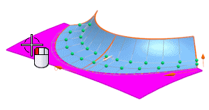
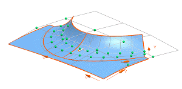
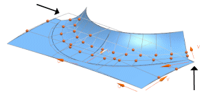
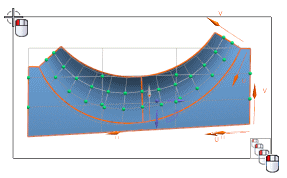
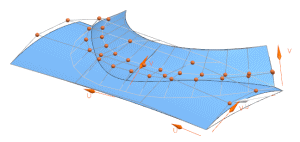
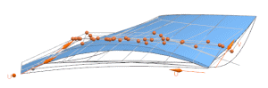
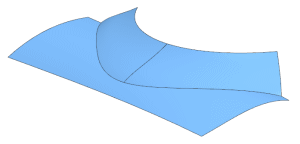

Add a surface to edit and specify an extraction method for proportional pole movement
-
In the Curve or Surface group, with Select Object
 highlighted, select the face as shown.
highlighted, select the face as shown.


-
In the Settings group, from the Extraction Method list, select Minimum Bounded.

Minimum Bounded extracts the face based on a rectangular border enclosing the trimmed surface.
-
In the Method group, set or confirm the following options:
-
Move tab = Normal
-
Advanced Method =
 Proportional
Proportional
-
Pole Control =
 By U/V
By U/V
-
-
In the Curve or Surface group, in the Pole Selection subgroup, click Select Object.
-
Select all the displayed poles, as shown.

-
In the Microposition group, with Step Value at a value of 10, click the negative option twice.


-
Click OK to complete the X-Form edit.

-
In the Part Navigator, right-click the X-Form entry.
Notice that Edit Parameters is now available in addition to Edit with Rollback, so you can reference geometry that may have been subsequently created after the X-Form feature, when editing the X-From feature.
-
Close the part.